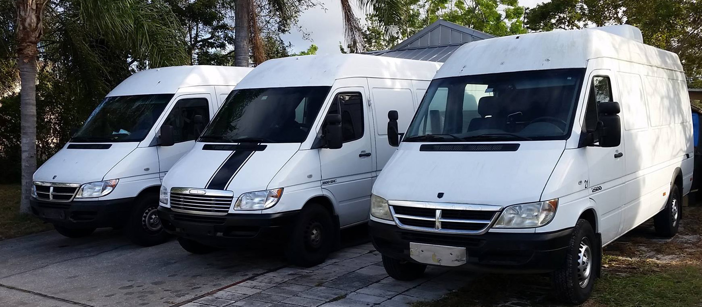

Meet the Team
Bill Gerker
Bill is President of VSAT-ResQ and our lead field technician. Bill has been servicing and installing satellite systems since 1989, starting in the hay-day of TVRO backyard satellite systems. He has worked through the changing technologies as DBS arrived, two-way satellite Internet reached the home market, and VoIP via satellite became routine in hurricane aftermath. His work on ships, islands, and 15 states has earned the reputation as a Go-to-Guy wherever the task is large or difficult. In-depth familiarity with iDirect, Linkstar, Hughes PES, and Comtech EF Data indoor units has proven an asset to our customers.Laurie Gerker
Laurie is the Owner and Vice President of VSAT-ResQ. Laurie has owned and operated numerous businesses through the years and has been in charge of VSAT-ResQ since 2000.Raymond Cromie
Ray is the Chief Financial Officer for VSAT-ResQ. He is also a satellite installation engineer. Ray has 20 years Naval service as an electronics technician where he maintained air traffic control radar and communication systems, shipboard navigation, radar and internal communication systems. Ray is also experienced in electronics troubleshooting, repair procedures, classroom and field training, and logistic support. Ray has worked at a VSAT Field Technician since 2002 installing, moving, repairing, testing and upgrading satellite link and associated equipment, mounts and cable. Ray has held secret security clearances thanks to his work with the Navy.Michael Santiago
Michael (Mike) is a new VSAT ResQ recruit. A perfectionist at heart with a strong background in computer programming and graphic design, Mike holds certifications in Adobe Photoshop CC, Adobe Illustrator CC, Adobe InDesign CC, and Adobe Premiere CC. Always seen with a MacBook nearby.Equipment

We have a fleet of Sprinter vans to transport us just about anywhere we'd want to go and take plenty
of tools with us. Our primary is a 2005 Freightliner Sprinter.
Each truck is packed with a collection of tools including spectrum analyzer, BirDog satellite identifier, and a laptop computer (Mac or PC).
For difficult to reach situations, we can also bring a 2004 Genie AWP, 30 feet indoor personnel lift.
Each truck is packed with a collection of tools including spectrum analyzer, BirDog satellite identifier, and a laptop computer (Mac or PC).
For difficult to reach situations, we can also bring a 2004 Genie AWP, 30 feet indoor personnel lift.
Insurance
We carry General Liability coverage - $1,000,000 each occurrence.
We also carry Worker's Compensation - $100,000.
We will provide certificate upon request.